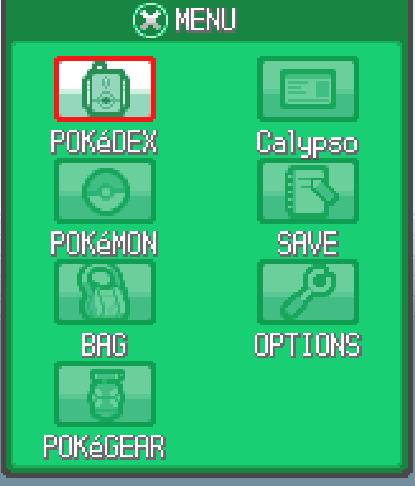
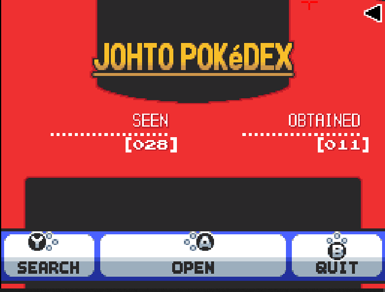
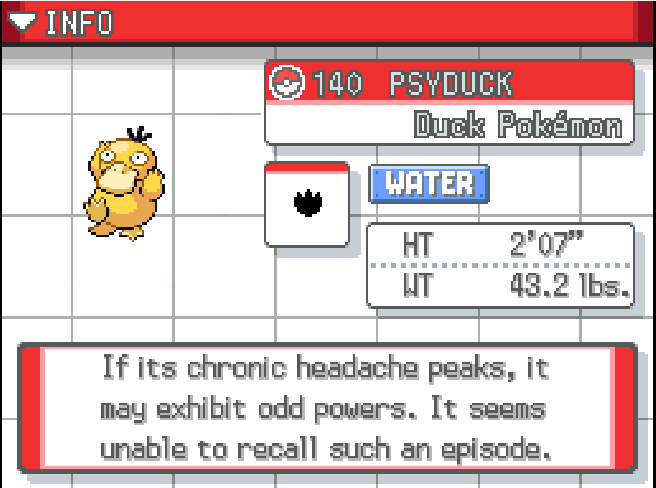

You may be able to find the habitat in your PokéDex, and if not, you can check a site such as Bulbapedia or Serebii.net for encounter locations.
Here in the SoulSilver menu, the PokéDex option is the first on the list.
Ignore the numbers, this is just a new one. Open the dex.
Locate your Pokémon's dex entry.

Go to the screen that shows your Pokémon's habitat (in SoulSilver, the 'area' tab can be accessed by tapping on the labelled button). As you can see, in Johto, Psyduck can be found on Route 35 and in the Ilex Forest.
Go to whichever location the Pokémon can be found that's accessible to you. Looks like I'm off to Ilex Forest, since it's the closest to me right now!
Let's continue onto Full Odds Step 4!